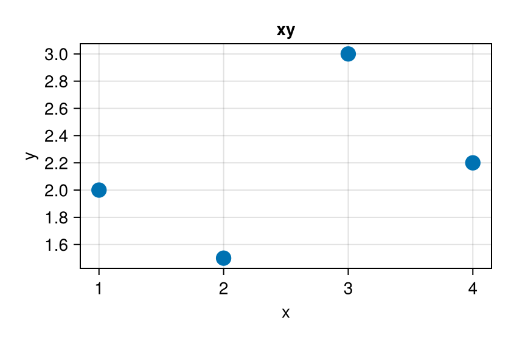
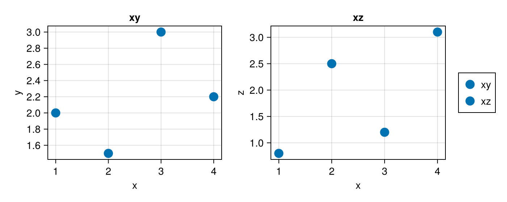

Linked views
A click in a Masque widget updates its @bind variable, and cells that use the variable respond to the change. So linking a scatter to a detail plot, a table, or a model fit is ordinary Pluto code: use the value in another cell to create a plot or compute a result.
Click a point in the xy plot below, and the same sample is selected in the xz plot:
Notebook as text
Click a point in the xy plot, and the same sample is selected in the xz plot. Hover stays on the plot under the pointer.
Plot the same samples, in the same order, in two figures.
begin
xs = [1.0, 2.0, 3.0, 4.0]
ys = [2.0, 1.5, 3.0, 2.2]
zs = [0.8, 2.5, 1.2, 3.1]
fig_xy = Figure(size = (420, 280))
ax_xy = Axis(fig_xy[1, 1]; xlabel = "x", ylabel = "y", title = "xy")
s_xy = scatter!(ax_xy, xs, ys; markersize = 18)
nothing
end@bind pick masque(fig_xy; bind = s_xy)
This cell uses pick and passes the clicked index as selected, so the xz plot highlights the sample you clicked.
begin
fig_xz = Figure(size = (420, 280))
ax_xz = Axis(fig_xz[1, 1]; xlabel = "x", ylabel = "z", title = "xz")
scatter!(ax_xz, xs, zs; markersize = 18)
masque(fig_xz; selected = isnothing(pick) ? Int[] : [pick.index])
endThe xz plot follows clicks, not hovering: hovering a point highlights it only on the plot under the pointer. To highlight a whole series on every plot as you hover, use a legend, as shown in Highlight a series across panels.
Drive a second plot from a click
Give each payload a key that identifies its row, such as an id or a name, and use the key in other cells. Here, clicking a city on a map plots that city's series:
begin
cities = [
(id = "tok", name = "Tokyo", lon = 139.7, lat = 35.7),
(id = "del", name = "Delhi", lon = 77.2, lat = 28.6),
(id = "sha", name = "Shanghai", lon = 121.5, lat = 31.2),
]
series = Dict(
"tok" => [3.1, 3.4, 3.2, 3.6],
"del" => [2.2, 2.5, 2.9, 3.0],
"sha" => [2.0, 2.4, 2.3, 2.7],
)
fig = Figure(size = (560, 320))
ax = Axis(fig[1, 1]; xlabel = "longitude", ylabel = "latitude")
s = scatter!(ax, [139.7, 77.2, 121.5], [35.7, 28.6, 31.2]; markersize = 16)
pts = interactables(s; payloads = cities)
nothing
end@bind pick masque(fig, pts; bind = s)bind = s makes pick the clicked city itself, or nothing before the first click.
begin
detail = Figure(size = (560, 240))
dax = Axis(detail[1, 1]; title = isnothing(pick) ? "click a city" : pick.name)
isnothing(pick) || lines!(dax, series[pick.id])
detail
endThe detail cell uses pick, so it responds to each click but not to hovering. The same pick.id could filter a DataFrame or choose the data for a fit. The detail figure can be a Masque widget too.
To show the clicked point as selected in a second widget, pass it as that widget's selected=. Selection round-trip shows how.
Several axes in one figure
One masque call covers every axis in a figure, and each plot gets its own field in the value, so two scatters give sel.scatter and sel.scatter_2. To name the fields after your panels, pass the plots that scatter! returned as bind:
@bind sel masque(fig; bind = (xy = p_xy, xz = p_xz))Each panel keeps its own selection: clicking a point in the xy panel sets sel.xy and leaves sel.xz as it was. When the panels plot the same rows of your data, link them so that a click selects the row in both, as the next section shows.
Select the same rows on every panel
When two plots draw the same rows, such as one sample per point in an xy and an xz panel, pass them to linked. Clicking a point in either panel selects that row in both, and hovering a point outlines the same row on the other panel:
@bind row masque(fig; bind = linked(p_xy, p_xz))row is the position of the clicked point in the data you plotted, so df[row, :] is its sample, or nothing before the first click. To pick several rows, pass select = :many: each click adds a row or takes it out, dragging a box over points adds every row inside, and rows is a Vector in the order you picked them.
@bind rows masque(fig; bind = linked(p_xy, p_xz; select = :many))When the panels plot your rows in different orders, or one panel draws them as one plot per group, give the rows a key. With key = :id, a row is the id of a point's payload, and every panel that has a point with that id marks it. Pass an axis to link every plot on it:
begin
fig = Figure(size = (640, 300))
by_group, all_samples = Axis(fig[1, 1]), Axis(fig[1, 2])
a = scatter!(by_group, [1, 2], [1, 2]; label = "A")
b = scatter!(by_group, [3, 4], [1, 2]; label = "B")
s = scatter!(all_samples, [4, 3, 2, 1], [1, 1, 1, 1])
axislegend(by_group)
parts = [
interactables(a; payloads = [(id = "s1",), (id = "s2",)]),
interactables(b; payloads = [(id = "s3",), (id = "s4",)]),
interactables(s; payloads = [(id = "s4",), (id = "s3",), (id = "s2",), (id = "s1",)]),
]
nothing
end@bind w masque(fig, parts..., (samples = linked(by_group, all_samples; key = :id, select = :many),))w.samples holds the ids, such as ["s2", "s4"], and clicking the legend entry "A" picks s1 and s2 on both panels. To start with rows selected, pass them as selected = (samples = ["s1"],), by key, or by position when the group has no key.
Highlight a series across panels
Hovering a legend entry picks out every mark of its series, on every axis where the series appears. Clicking an entry sets sel.legend to a LegendEvent, which another cell can use to filter your data. With bind = :legend, as in the example, pick is that event. See Legend.
Notebook as text
Hover over a legend entry, and every point in that series highlights on both axes.
Label each scatter plot and put both in one Legend, so hovering over an entry highlights the series it names.
begin
xs = [1.0, 2.0, 3.0, 4.0]
ys = [2.0, 1.5, 3.0, 2.2]
zs = [0.8, 2.5, 1.2, 3.1]
fig = Figure(size = (700, 280))
ax_xy = Axis(fig[1, 1]; xlabel = "x", ylabel = "y", title = "xy")
ax_xz = Axis(fig[1, 2]; xlabel = "x", ylabel = "z", title = "xz")
p_xy = scatter!(ax_xy, xs, ys; label = "xy", markersize = 18)
p_xz = scatter!(ax_xz, xs, zs; label = "xz", markersize = 18)
Legend(fig[1, 3], [p_xy, p_xz], ["xy", "xz"])
nothing
end@bind pick masque(fig; bind = :legend)
Filter a table from a region
To select many points at once, drag a box. When you release an ROIInteractable with selects, it returns every point inside the box, in the field of the plot it selects from. With that list as picks, another cell can take those rows from your table with df[picks, :], or create another plot from them. Brush a region shows how.
For what each click, release, and drag sets in the value, see How Masque works.